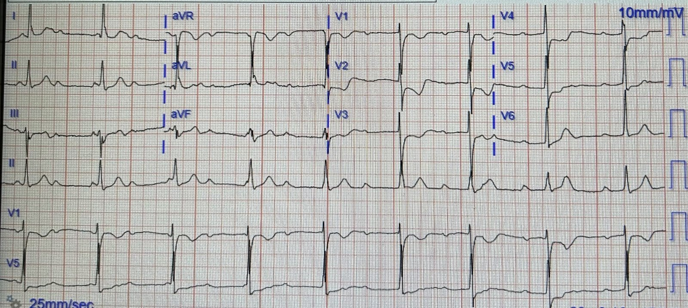
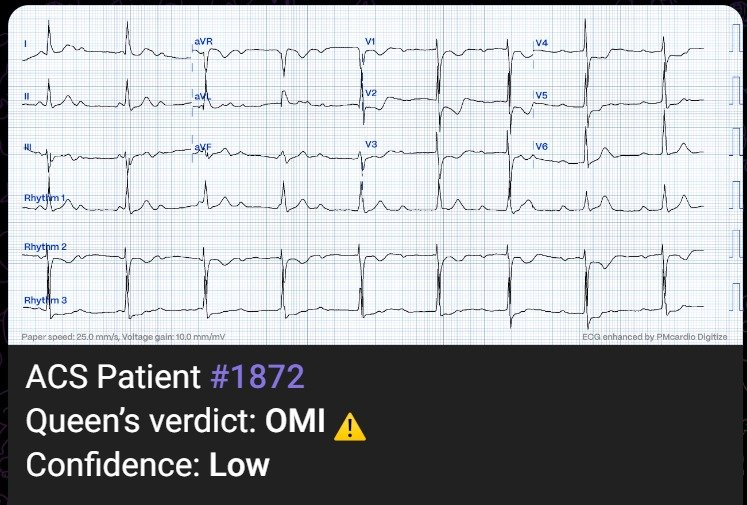
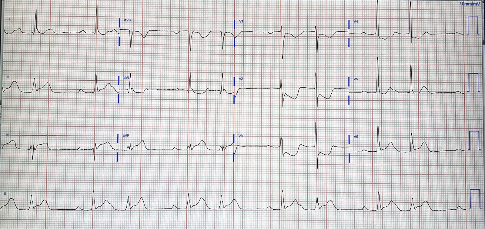
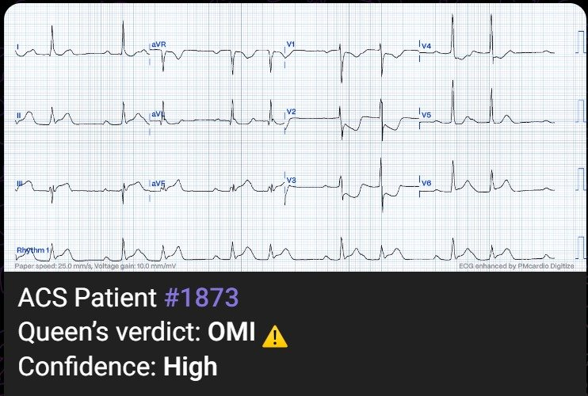
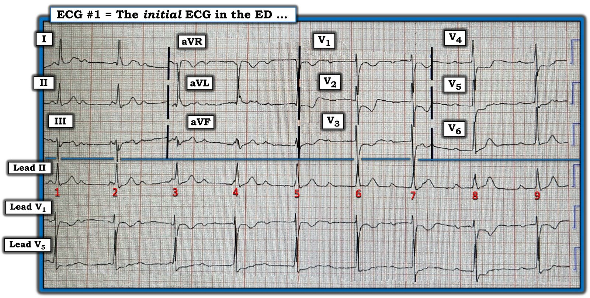
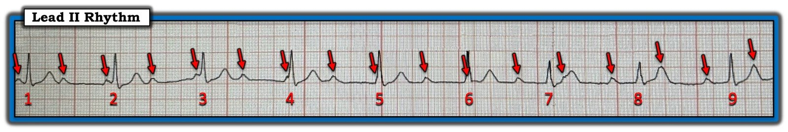
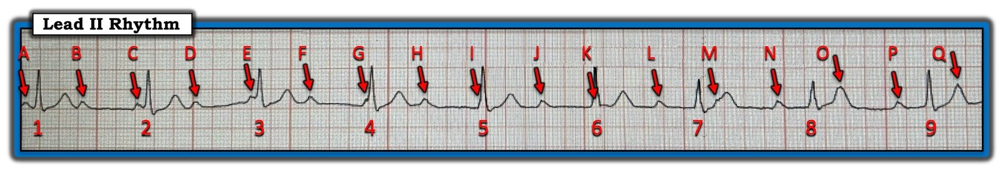
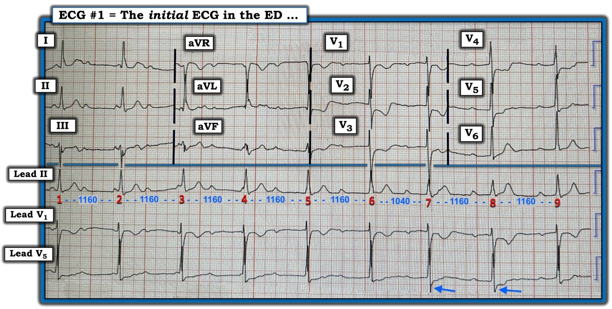
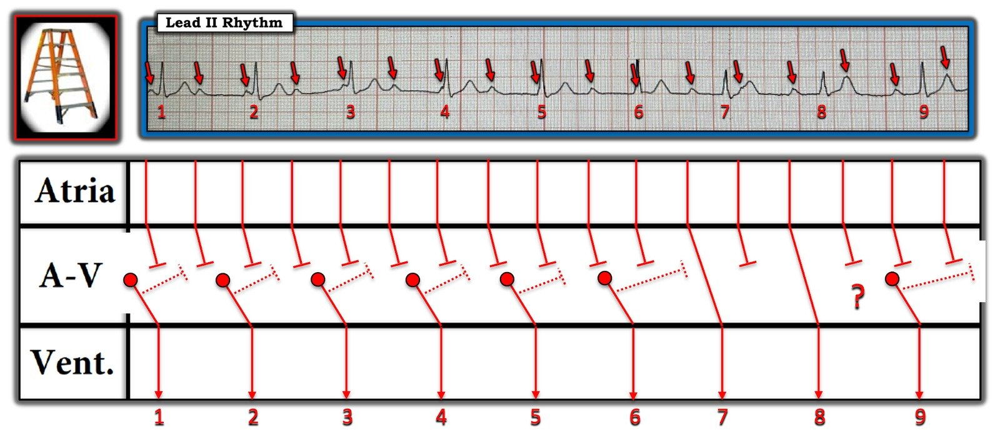
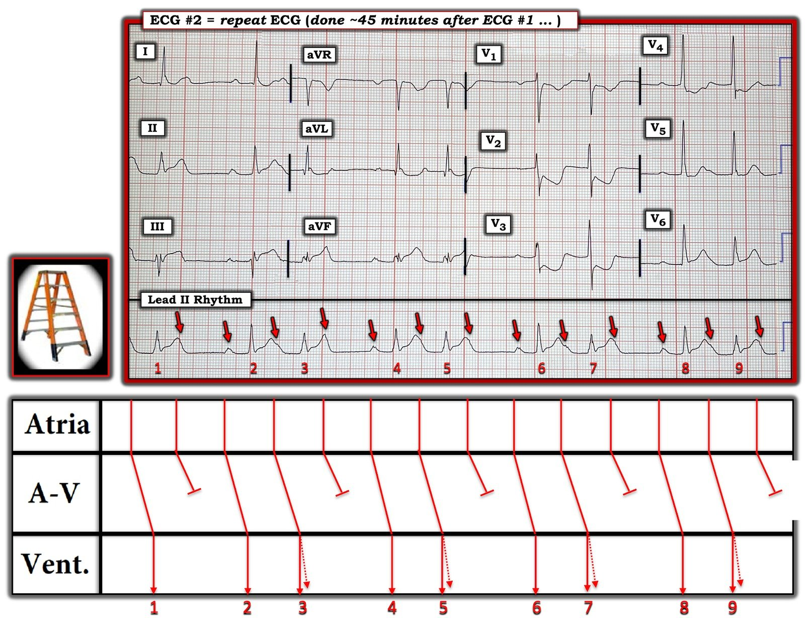

30/07/2023 — Một phụ nữ ở độ tuổi 50 đau ngực, choáng váng và “thiếu máu cục bộ dưới nội tâm mạc thành trước”
Bản dịch tiếng Việt của bài "A woman in her 50s with chest pain and lightheadedness and “anterior subendocardial ischemia”" – Dr. Smith’s ECG Blog. Giữ nguyên toàn bộ 12 hình ảnh của bản gốc.
Tác giả: Pendell Meyers
Một phụ nữ ngoài 50 tuổi đến viện vì đau ngực cấp và choáng váng từ vài giờ trước. Đây là điện tâm đồ lúc phân loại (triage) của bà, ghi trong lúc đang có triệu chứng:


Bác sĩ khoa cấp cứu (ED) đọc bản ghi này là “Nhịp xoang bình thường. LVH. Bất thường ST rõ rệt, có thể tổn thương dưới nội tâm mạc thành trước.”
Smith: Tôi ngờ rằng đây chỉ là sự xác nhận kết quả đọc bằng máy tính thông thường. Những kết quả này thường sai và dẫn dắt bác sĩ đi lạc hướng.
Kết quả đọc này sai ở nhiều mặt.
Nhịp là một dạng blốc tim nào đó (xem phần bình luận của Ken ở cuối bài) kèm nhịp thoát bộ nối. ST chênh xuống (STD) tối đa ở V1-V4 là dấu hiệu chẩn đoán thiếu máu cục bộ xuyên thành cấp ở thành sau, nhiều khả năng nhất do OMI thành sau. Thiếu máu cục bộ dưới nội tâm mạc không định khu, và thiếu máu cục bộ dưới nội tâm mạc biểu hiện bằng STD tối đa ở V5-6, II, kèm ST chênh lên (STE) ở aVR.
Đây là kết quả đọc bằng AI Queen of Hearts:


Như vậy, OMI của bệnh nhân ban đầu đã bị bỏ sót. Bản ghi không đạt tiêu chuẩn STEMI.
May mắn là 45 phút sau, khi bệnh nhân vẫn còn đau và có kết quả troponin I là 136 ng/L, điện tâm đồ được ghi lại:




OMI STEMI dương tính (STEMI(+) OMI) rõ ràng ở thành dưới, thành sau và thành bên, nay kèm nhiều khả năng blốc tim độ 2 loại 1 (Wenckebach).
Cuối cùng OMI cũng được nhận ra.
Bệnh nhân được đưa vào phòng thông tim (cath lab) và phát hiện tắc hoàn toàn RCA đoạn giữa, dòng chảy TIMI 0, được đặt stent với kết quả rất tốt.
Blốc tim của bà hết nhanh chóng.
Troponin tăng nhanh lên trên 25.000 ng/L (giới hạn báo cáo của phòng xét nghiệm).
Siêu âm tim cho thấy rối loạn vận động thành tương ứng.
Bệnh nhân sống sót đến khi ra viện.
Những điểm cần học:
Trong nhiều trường hợp, chúng ta có thể phát hiện OMI trên điện tâm đồ sớm hơn nhiều so với tiêu chuẩn STEMI, và dĩ nhiên nhiều OMI không bao giờ đạt tiêu chuẩn STEMI.
AI cũng làm được điều đó.
STD tối đa ở V1-V4, không do bất thường QRS gây ra, trong bối cảnh có triệu chứng hội chứng vành cấp (ACS), là OMI thành sau cho đến khi chứng minh được điều ngược lại.
Thiếu máu cục bộ dưới nội tâm mạc không định khu.
RCA thường cấp máu cho nút SA và nút AV, vì vậy OMI do RCA có thể biểu hiện bằng blốc tim và nhịp chậm như trong ca này.

===================================
BÌNH LUẬN CỦA TÔI, bởi KEN GRAUER, MD (30/7/2023):
===================================
Ca hôm nay nêu bật rất nhiều điểm quan trọng. Với những bạn đọc thích thử thách đọc các rối loạn nhịp tim — ca hôm nay là một “mỏ vàng” các ĐIỂM THEN CHỐT (PEARLS) về cách nhận biết Wenckebach AV.
- CẢNH BÁO: Phần dưới đây minh họa “quá trình suy nghĩ” của tôi khi đánh giá nhịp ban đầu của ca hôm nay. Một số khái niệm tôi ôn lại là cơ bản, và cần được mọi nhân viên y tế thường xuyên theo dõi Dr. Smith’s ECG Blog hiểu, học và áp dụng. Những khái niệm khác tôi sẽ ôn lại vượt xa phần cơ bản — và dành cho người đọc điện tâm đồ nâng cao (và những ai muốn đọc các nhịp phức tạp giỏi hơn).
- Tôi để BẠN tự quyết định muốn “lặn” sâu đến đâu vào nhịp của ca hôm nay. Dù vậy, ngay cả với người đọc ít kinh nghiệm hơn — HÃY BIẾT rằng tôi có làm rõ những khái niệm cơ bản MẤU CHỐT mà mọi nhân viên y tế cần nắm.
=======================
LƯU Ý: Ban đầu tôi chỉ xem điện tâm đồ #1 — và chỉ biết những gì bác sĩ khoa cấp cứu đã ghi trong kết quả đọc của mình. Tôi không biết gì khác về ca bệnh (Để rõ ràng — tôi đã chép lại bản ghi ban đầu của ca hôm nay ở Hình 1).
=======================


ĐIỂM THEN CHỐT (PEARL) #1: Dù nhịp ở điện tâm đồ #1 phức tạp và cực kỳ khó — Bạn không cần phải xác định đây là nhịp gì thì mới xử trí bệnh nhân đúng được!
- Vì vậy — Đừng lo nếu mãi sau bạn mới nhận ra Wenckebach AV (hoặc thậm chí nếu bạn hoàn toàn không nhận ra Wenckebach AV trong ca hôm nay). Điều quan trọng — là bạn nắm được bệnh sử ( = tức là, Một phụ nữ ngoài 50 tuổi đến khoa cấp cứu vì đau ngực và choáng váng trong vài giờ) — và bạn biết phải ngay lập tức nâng mức nghi ngờ OMI cấp mỗi khi biết bệnh nhân đến khoa cấp cứu vì đau ngực mới xuất hiện!
- “Nâng” mức nghi ngờ OMI cấp — ý tôi là nhận thức được rằng bệnh sử đau ngực mới xuất hiện này lập tức xếp bệnh nhân vào nhóm “có tỷ lệ mắc cao hơn” đối với OMI cấp — để bạn “luôn để mắt tìm” cả những bất thường điện tâm đồ tinh tế (mà trong bối cảnh lâm sàng này có nghĩa là OMI cấp cho đến khi chứng minh được điều ngược lại).
- Ở Hình 1 — Bất thường sóng ST-T ở chuyển đạo V2 của điện tâm đồ #1 là rõ ràng. Tinh tế hơn một chút (nhưng chắc chắn có) — là các bất thường sóng ST-T ở các chuyển đạo lân cận (tức là, sóng T đảo ngược ở chuyển đạo V1 — ST dẹt và chênh xuống ở các chuyển đạo V3 đến V5). Như Dr. Meyers đã nêu — bệnh sử đau ngực mới xuất hiện + sóng ST-T chênh xuống khu trú, tối đa ở các chuyển đạo V2 đến V4 = OMI thành sau cấp cho đến khi chứng minh được điều ngược lại!
- Vậy, trở lại với Pearl #1 — lý do vì sao việc bạn có nhận ra Wenckebach AV trên điện tâm đồ ban đầu này hay không không quan trọng — là vì, giả sử bệnh nhân này không tụt huyết áp — do tần số tim nói chung chấp nhận được và có bằng chứng điện tâm đồ gợi ý OMI thành sau cấp cho đến khi chứng minh được điều ngược lại ==> thì có chỉ định thông tim sớm kèm PCI càng sớm càng tốt! Thực tế lâm sàng — là mọi rối loạn dẫn truyền có thể có sẽ nhiều khả năng cải thiện (nếu không nói là hết hẳn) ngay khi động mạch “thủ phạm” được tái tưới máu!
ĐIỂM THEN CHỐT (PEARL) #2: Hãy nhớ rằng, “Cái thường gặp thì thường gặp!” Trong bối cảnh OMI cấp thành dưới — hoặc dưới-sau — hoặc OMI thành sau đơn độc — phần lớn các rối loạn dẫn truyền có thể xuất hiện rốt cuộc sẽ là một biểu hiện nào đó của Wenckebach AV (Nhớ rằng “Wenckebach AV” — đồng nghĩa với blốc AV độ 2, Mobitz loại I ).
- Mọi nhân viên cấp cứu đều quen thuộc với hình ảnh “kinh điển” của blốc AV độ 2 Mobitz I (tức là, Khoảng PR dài dần cho đến khi một nhát bị rớt — tạo ra một khoảng ngưng ngắn — rồi chu kỳ lại bắt đầu, khi nhát kế tiếp được dẫn truyền với khoảng PR ngắn hơn).
- Dù vậy — có rất nhiều “biến tấu trên chủ đề này” của Mobitz I mà khi có mặt có thể khiến việc nhận ra Mobitz I trở nên khá khó khăn. Một số ví dụ về các biến tấu trên “chủ đề” Mobitz I có thể gồm — nhát thoát bộ nối, đường dẫn truyền kép trong nút AV, blốc SA đồng thời — hoặc khi các chu kỳ Wenckebach kết thúc bằng PAC hay nhát dội (Echo), thay vì sóng P đúng lúc không dẫn truyền “kinh điển”. KHÔNG sao cả! — vì Cái thường gặp thì thường gặp. NẾU bệnh nhân có một kiểu rối loạn dẫn truyền nào đó + OMI cấp thành dưới hoặc dưới-sau hoặc thành sau đơn độc — thì dù không thấy hình ảnh Mobitz I “kinh điển”, khả năng vẫn rất cao là một dạng nào đó của Wenckebach AV vẫn đang vận hành.
- Nhận định trên càng đúng NẾU phức bộ QRS hẹp (như ở điện tâm đồ #1) — vì QRS gần như luôn rộng khi có Mobitz II.
- Cái thường gặp thì thường gặp. Theo kinh nghiệm tìm Wenckebach của tôi trong hơn 40 năm qua — >95% blốc AV độ 2 là Mobitz I (và không phải Mobitz II).
ĐIỂM THEN CHỐT (PEARL) #3: NẾU bạn muốn thử xác định cơ chế của một rối loạn dẫn truyền — bước khởi đầu DỄ NHẤT là đánh dấu các sóng P. Bạn sẽ thấy tôi cũng đánh số các nhát — vì điều này lập tức giúp mọi người cùng chắc chắn rằng chúng ta đang nói về cùng một phần của bản ghi (Hình 2).
- Để có blốc AV — nhịp nhĩ phải đều (hoặc ít nhất gần đều, nếu có loạn nhịp xoang nền). Nếu hình dạng sóng P thay đổi — hoặc nếu khoảng P-P rõ ràng không đều — thì nhiều khả năng bạn đang đối mặt với một thứ gì đó khác với Wenckebach AV đơn thuần.
- HÃY NHÌN Hình 2. Chẳng phải giờ đây dễ hơn nhiều khi mọi sóng P đã được đánh dấu — để nhận ra rằng nhịp nhĩ nền là đều sao?
- Ngay khi tôi đánh dấu tất cả sóng P — tôi thấy rõ rằng nhiều (phần lớn) sóng P này không liên quan đến các phức bộ QRS lân cận, mà theo định nghĩa có nghĩa là có phân ly nhĩ thất.


ĐIỂM THEN CHỐT (PEARL) #4 — Phân ly nhĩ thất không bao giờ là một “chẩn đoán”. Thay vào đó — nó là một tình trạng do “một thứ khác” gây ra. Có 3 Nguyên nhân gây Phân ly nhĩ thất: i) Bản thân Blốc AV (độ 2 hoặc độ 3); ii) “Chiếm quyền” (Usurpation) — trong đó sóng P tạm thời không dẫn truyền do một nhịp bộ nối gia tốc lấn át (tức là, “chiếm quyền” kiểm soát nhịp); và, iii) “Mặc định” (Default) — trong đó một nhịp thoát bộ nối nắm quyền theo kiểu “mặc định” (tức là, do nút SA chậm lại) — như có thể xảy ra khi đang dùng một thuốc như thuốc chẹn ß.
ĐIỂM THEN CHỐT (PEARL) #5 — Phân ly nhĩ thất hoàn toàn không giống với blốc AV độ 3! Đây là một trong những khái niệm bị hiểu sai phổ biến nhất trong toàn bộ lĩnh vực đọc rối loạn nhịp! Blốc AV hoàn toàn chỉ là một trong 3 nguyên nhân có thể gây phân ly nhĩ thất.
- MẤU CHỐT để xác định có blốc AV hay không — là xác định LIỆU sóng P có không dẫn truyền dù có đủ cơ hội để dẫn truyền hay không.
Hãy xem Hình 3.
- Các sóng P được ký hiệu C, E, G, I, K và M trên thực tế không có cơ hội dẫn truyền — vì chúng hoặc xuất hiện với khoảng PR quá ngắn (quá gần QRS kế bên) — hoặc sóng P nằm trong QRS — hoặc sóng P xuất hiện quá sớm sau QRS (trong thời kỳ trơ tuyệt đối — như trường hợp sóng M).
- Ngược lại — các sóng P được ký hiệu B, D, F, H, J, L, N và P lẽ ra phải dẫn truyền — nhưng lại không dẫn truyền. Vì vậy, ít nhất có một dạng blốc AV độ 2 nào đó ở Hình 3.


ĐIỂM THEN CHỐT (PEARL) #6 — Nhịp ở Hình 3 không phải blốc AV hoàn toàn! Phần lớn các trường hợp, NẾU mức độ blốc AV là hoàn toàn (độ 3) — thì nhịp thất phải đều (hoặc ít nhất khá đều). Đó là vì các nhịp thoát xuất phát từ nút AV, bó His hay tâm thất thường là những nhịp khá đều. Có thể có ngoại lệ (tức là, trong lúc hồi sinh tim phổi) — nhưng ngay cả khi đó, thường vẫn có một kiểu đều đặn có thể nhận ra của nhịp thất.
- Chỉ trong vài giây — tôi đã biết rằng điện tâm đồ ban đầu của ca hôm nay không phải blốc AV hoàn toàn.
- Điểm MẤU CHỐT: Manh mối TỐT NHẤT cho thấy có ít nhất một phần dẫn truyền — là NẾU khi có phân ly nhĩ thất, bạn thấy một hoặc nhiều nhát xuất hiện sớm hơn dự kiến.
Hãy NHÌN lại điện tâm đồ ban đầu của ca hôm nay (mà tôi chép lại ở Hình 4).
- LÀM SAO tôi lập tức biết rằng nhịp này không phải blốc AV hoàn toàn?
TRẢ LỜI:
- Tôi biết nhịp ở Hình 4 khó có khả năng là blốc AV hoàn toàn — vì nhát #7 xuất hiện sớm hơn dự kiến (Như thấy ở Hình 5 — khoảng R-R đi trước nhát #7 = 1040 ms — trong khi khoảng R-R đi trước tất cả các nhát khác trên bản ghi này = 1160 ms.). Theo ĐIỂM THEN CHỐT #6 — điều này gợi ý mạnh rằng nhát #7 có được dẫn truyền.
- Vì có ít nhất 1 nhát được dẫn truyền ở Hình 5 — điều này có nghĩa là nhịp không phải blốc AV hoàn toàn — mà thay vào đó là một dạng blốc AV độ 2 — và theo ĐIỂM THEN CHỐT #2, chúng ta biết rằng cho đến nay, khi có OMI thành sau cấp kèm một dạng blốc AV độ 2 nào đó với QRS hẹp — thì gần như chắc chắn đó là một dạng Wenckebach AV.
- ĐIỂM THEN CHỐT (PEARL) #7: Nhịp ở điện tâm đồ ban đầu này không những không phải blốc AV hoàn toàn — mà cũng không nhất thiết là blốc độ 2 dạng “mức độ cao”. Tôi định nghĩa blốc độ 2 “mức độ cao” — là khi từ 2 sóng P trở lên lẽ ra phải dẫn truyền lại không dẫn truyền. Như đã bàn ở trên khi giải thích Hình 3 — các sóng P được ký hiệu C, E, G, I, K và M trên thực tế không có cơ hội dẫn truyền — vì chúng hoặc xuất hiện với khoảng PR quá ngắn (quá gần QRS kế bên) — hoặc sóng P nằm trong QRS — hoặc sóng P xuất hiện quá sớm sau QRS (trong thời kỳ trơ tuyệt đối — như trường hợp sóng M). Vì vậy — chúng ta không bao giờ thấy 2 sóng P liên tiếp lẽ ra phải dẫn truyền lại không dẫn truyền — nghĩa là chúng ta không có bằng chứng nào gợi ý đây là blốc mức độ cao.


(7/8/2023 — CẢM ƠN H.S.Cho đã phát hiện lỗi đánh máy của tôi …)
ĐIỂM THEN CHỐT (PEARL) #8: Hãy hiểu rằng NẾU bạn muốn giỏi nhận biết các rối loạn nhịp phức tạp (đặc biệt là các dạng phức tạp của phân ly nhĩ thất và blốc AV) — thì Bạn BẮT BUỘC phải dùng compa đo (calipers).
- Tôi không nói rằng mọi người làm lâm sàng đều phải dùng compa đo (calipers) — vì như tôi đã nhấn mạnh ở ĐIỂM THEN CHỐT #1 — bệnh nhân hôm nay bị OMI thành sau cấp cho đến khi chứng minh được điều ngược lại — nghĩa là cần thông tim ngay — với thực tế lâm sàng là bất kỳ rối loạn dẫn truyền nào có thể hiện diện cũng nhiều khả năng sẽ cải thiện ngay khi động mạch “thủ phạm” được tái tưới máu.
- BẠN có nhận ra rằng nhát #7 trong Hình 5 đến sớm một chút không? Nhiều khả năng là nếu không dùng compa đo — bạn sẽ không nhận ra điều này.
- XIN NHẤN MẠNH: Dùng compa đo không làm chậm việc đọc điện tâm đồ của bạn. Ngược lại, dùng compa đo đẩy nhanh việc đọc điện tâm đồ của bạn — vì bạn có thể xác định ngay rằng nhát #7 đến sớm hơn dự kiến một chút.
- Dùng compa đo cũng giúp tôi nhanh chóng xác định rằng nhịp nhĩ mà tôi đánh dấu bằng các mũi tên ĐỎ trong Hình 2 — là đều! Biết nhìn vào đâu để tìm những sóng P ẩn một phần trong các phức bộ QRS hoặc trong các phần của sóng ST-T — trở nên dễ dàng hơn nhiều khi đặt compa theo khoảng P-P xác định bằng khoảng cách giữa bất kỳ 2 sóng P liên tiếp nào mà bạn nhận ra rõ (chẳng hạn khoảng cách giữa B và C — hoặc giữa C và D trong Hình 3).
ĐIỂM THEN CHỐT #9: Khi không chắc một nhát nào đó có được dẫn truyền xuống thất hay không — hãy TÌM những khác biệt tinh tế về hình dạng QRS!
- Mặc dù cả nhát dẫn truyền từ xoang lẫn nhát thoát bộ nối đều là các xung động trên thất trông giống nhau — đôi khi vẫn có những khác biệt tinh tế-nhưng-có-thật về hình dạng QRS giữa 2 loại nhát này! Đó là vì nhát thoát bộ nối không phải lúc nào cũng xuất phát từ trung tâm nút AV — và khi xuất phát lệch sang phải hoặc sang trái so với trung tâm, chúng có thể biểu hiện những khác biệt tinh tế về hình dạng (tức là, sóng R có thể nhỏ hơn hoặc cao hơn một chút; sóng S có thể sâu hơn hoặc rộng hơn một chút).
- Chúng ta thấy hiện tượng này rõ nhất ở chuyển đạo V5 trong Hình 5! Các mũi tên XANH LAM ở chuyển đạo này cho thấy những nhát duy nhất trong toàn bộ dải nhịp có sóng S sâu hơn như vậy là nhát #7 và #8. Điều này ủng hộ mạnh mẽ nghi ngờ của tôi rằng nhát #7 là nhát dẫn truyền từ xoang, ở đây kèm blốc AV độ 1 dài (khoảng ~0,42 giây).
- Xin thừa nhận Tôi không chắc về cơ chế của nhát #8 — vì khoảng PR đi trước nó ngắn hơn một chút so với khoảng PR của nhát #7, là nhát mà chúng ta biết được dẫn truyền. Mũi tên XANH LAM trong Hình 5 gợi ý rằng nhát #8 cũng là nhát dẫn truyền từ xoang, có lẽ với khoảng PR ngắn lại đôi chút do cách nó kết thúc một chu kỳ Wenckebach 2:1? Thế nhưng nhát #8 lại có cùng khoảng R-R đi trước là 1016 msec. như các nhát bộ nối khác [người dịch: giá trị này khác với khoảng R-R trước các nhát khác được nêu ở phần Hình 5 phía trên]. Tôi thực sự không chắc.
=============================
GIẢN ĐỒ BẬC THANG:
Tôi sẽ kết thúc phần bình luận bằng các giản đồ bậc thang (laddergram) mà tôi đề xuất trong Hình 6 và Hình 7 — cho 2 bản ghi được trình bày trong ca hôm nay.



